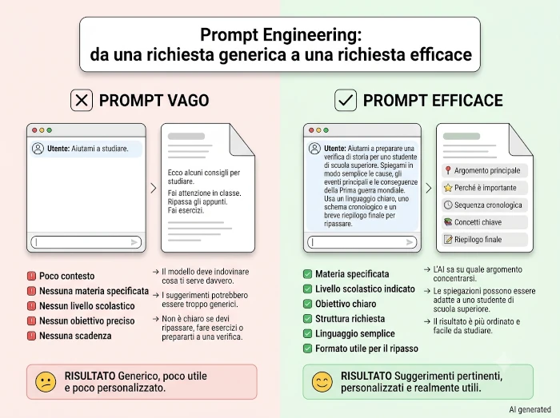
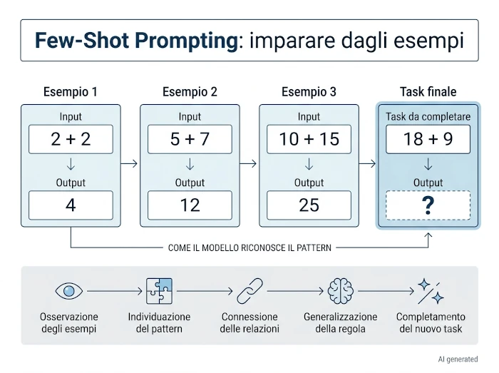
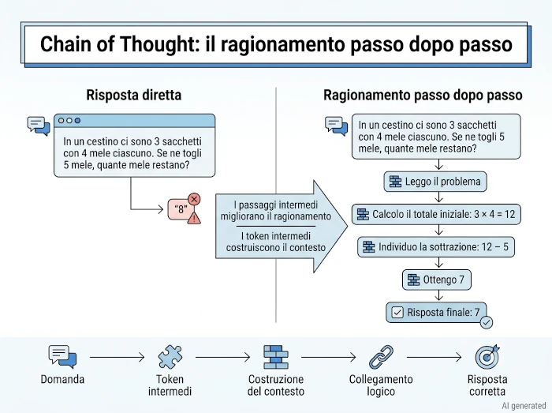
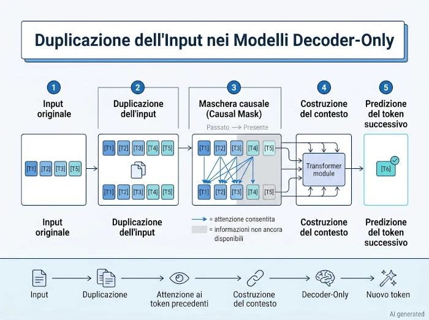

Cosa vedremo oggi
Nella parte precedente abbiamo iniziato a chiedere all'Intelligenza Artificiale come interpreta le nostre domande. La risposta, però, non si esaurisce con il funzionamento interno di un modello linguistico: prosegue ora sul piano pratico. Vedremo quali tecniche di prompt engineering funzionano davvero, quali errori sono più comuni e perché, nella maggior parte dei casi, la chiarezza vale più di qualsiasi formula "magica".
Come leggere questa intervista
Le domande sono reali.
Le risposte nascono dal confronto tra ChatGPT, Claude e le AI integrate nei motori di ricerca Google e Brave, verificate con fonti tecniche e fuse in un'unica voce narrativa.
Nota sulle immagini
Tutti gli schemi e le illustrazioni presenti in questa serie sono stati progettati appositamente per accompagnare il testo. Le immagini sono generate con l'ausilio dell'Intelligenza Artificiale, tramite la sinergia tra l'assistente di Google per ottenere consigli su quali immagini generare, Claude per la creazione di un prompt ottimale da dare Gemini e, quando necessario, rifinite manualmente con software di grafica per migliorarne chiarezza e coerenza con i contenuti. Per questo motivo ogni immagine riporta il watermark AI generated • Human edited.
Nota editoriale
Questa è una risposta a una domanda che è stata suddivisa in due articoli per facilitarne la lettura. Se non hai letto la parte precedente, ti consiglio di iniziare da Parte 2 — Dietro lo schermo: come un LLM interpreta le tue domande.
Cosa funziona davvero
Quello che segue è solo una breve infarinatura di quello che è utile nella preparazione di un prompt adeguato e come sempre, oltre la teoria data da qualche articolo che puoi trovare online, la pratica è poi ciò che consolida al meglio i concetti appresi. Inoltre queste sono pratiche che potrebbero diventare obsolete fra qualche anno, con l'evoluzione dei modelli.
Rimanere aggiornato è molto importante in questo ambito

Essere specifico sul contesto e sull'obiettivo finale. Specificare formato e vincoli.
Lunghezza, struttura, cosa includere/escludere, il formato di output desiderato (md, json, xml, txt, … ). Se non lo dici, scelgo io, e potrei sbagliare la tua intenzione.
Più contesto = meno mie supposizioni
Cosa NON fare (Prompt Vago):
Dammi una ricetta per cena con il pollo.
Cosa fare (Prompt Efficace):
Suggeriscimi una ricetta svuota-frigo per una persona. Ho solo petto di pollo, zucchine e della feta. Ho poco tempo, quindi la preparazione deve richiedere meno di 20 minuti e una sola padella. Escludi ricette che richiedono l'uso del forno.
Dare esempi
Few-Shot Prompting
Se vuoi un certo stile o formato, mostrami un esempio concreto. Imparo molto più velocemente da un esempio che dà una descrizione astratta. Meglio se poi gli esempi sono due o tre, nei quali mi mostri l'input e l'output desiderato. Gli esempi attivano pattern specifici nei miei parametri, mostrandomi esattamente lo stile, il formato e la logica che devo imitare. Ti mostro un esempio:
Esempio 1:
Input:Il cliente è arrabbiato per il ritardo.
Output:Ci scusiamo sinceramente per l'attesa. Stiamo verificando subito la spedizione.Esempio 2:
Input:Il prodotto è arrivato rotto.
Output:Siamo spiacenti per il danno. Procediamo immediatamente con la sostituzione gratuita.Task:
Input:Ho ricevuto l'oggetto sbagliato.
Output:

Chiedere ragionamento esplicito per problemi complessi
Chain of Thought (CoT)
Per problemi logici, matematici o complessi, non chiedere solo la risposta. Chiedimi di utilizzare un approccio a tappe con frasi del tipo
oppureragiona passo passo
così da costringermi a generare token intermedi che fungono da "contesto aggiuntivo" per i passaggi successivi, riducendo gli errori di calcolo logico.prima elenca i pro e contro, poi concludi
Questo porta con sé il vantaggio di non dover utilizzare esempi durante la richiesta ( Zero-Shot CoT), sebbene questo poi risulti meno prestante nei risultati ottenuti rispetto all'uso di almeno un esempio (Few-Shot CoT).

Iterare invece di aspettarsi la perfezione al primo colpo.
Non parlarmi come se fossi Google. Rivolgiti a me piuttosto come a un collaboratore:
dammi un primo output
dopo avermi chiesto una bozza di risposta, darmi alcuni pareri per migliorare il risultato, come
questo punto […] non lo ritengo coerente con la richiesta che ti ho fattooppureottimo, non avevo pensato a questo aspetto, dimmi di più.
correggimi
troppo lungo,tono più informale,manca X.
chiedimi un parere
sto pensando Y,secondo te c'è qualcosa che non vedo?;
chiedimi una critica
invece di
dimmi se va bene, usaSmonta completamente questa idea,Trova tutti i punti deboli. Questo riduce il rischio che io mi limiti a confermare le tue ipotesi.
Role playing — Giocare di ruolo
Per aiutarmi a dare maggiore contesto e prospettiva sulle tue intenzioni, è decisamente di aiuto dirmi di interpretare un ruolo specifico con frasi del tipo:
Rispondi come un CTO
Sei in mio professore di Scienze delle costruzioni presso Ingegneria Industriale
Io sono un avvocato che deve difendere un cliente per un'accusa di furto con scasso e tu sei la pubblica accusa
Con queste richieste io non effettuo un cambio di identità, però mi aiuti a dare il giusto peso alle parole che dovrei usare, il che generalmente si traduce in una maggiore efficienza nel consumo dei token.
Duplicazione dell'input
Una tecnica emergente (Free Lunch) confermata da ricerche recenti (Google Research, fine 2025) suggerisce di ripetere l'input o la richiesta due volte nel prompt. Ciò migliora le prestazioni dei modelli non-reasoning aumentando il "peso" dell'istruzione nel contesto di attenzione, senza aumentare i tempi di risposta.
I modelli LLM moderni sono "decoder-only" e usano una maschera causale (vedono solo il passato). Ripetendo il prompt, i token nella seconda copia possono "vedere" e fare attenzione a tutti i token della prima copia. Questo permette al modello di creare rappresentazioni (chiave/valore) molto più ricche e consapevoli del contesto completo. E poiché la ripetizione avviene nella fase di precaricamento (elaborazione dell'input), che è altamente parallelizzabile sulla GPU, il tempo di risposta non aumenta in modo percepibile, a differenza di tecniche come il Chain-of-Thought che richiedono generazione di token aggiuntivi.

Nota editoriale
Fino a questo punto abbiamo visto tecniche che migliorano direttamente il prompt. Esiste però un approccio diverso: chiedere all'AI di aiutarti a costruire il prompt stesso.
Chiedermi di generare un prompt efficace
Meta-Prompting (fonte in preprint)
Questa è una pratica molto efficace, ma solo se usata con coscienziosa cautela.
In sintesi:
Usi l'AI come un ottimizzatore tecnico della tua idea, ma senza delegare tutto quanto
Pensa a questo processo come a una collaborazione in due step:
-
Tu fornisci la "materia prima"
Spieghi all'AI cosa vuoi ottenere, il contesto e l'obiettivo finale con le tue parole. Nessuno conosce il tuo scopo meglio di te.
-
L'IA fa l' "ingegnere"
Chiedile di trasformare la tua idea in un prompt tecnicamente perfetto. L'AI sa applicare formattazioni complesse (come tag XML o schemi JSON) e tecniche avanzate che riducono errori e token sprecati, cose che spesso gli umani trascurano.
Ad esempio:
Passo 1 — la materia prima che tu fornisci
Devo scrivere un prompt per farmi generare un piano di allenamento. Sono un principiante, ho solo manubri a casa, posso allenarmi tre volte a settimana per 40 minuti. Voglio che il prompt sia ben strutturato, magari con ruolo e vincoli separati, ma non so bene come organizzarlo. Puoi scrivermelo tu?Passo 2 — l'AI restituisce il prompt ottimizzato, non la risposta finale
Agisci come un personal trainer certificato specializzato in allenamento a corpo libero e con manubri per principianti.
Contesto: sto iniziando da zero, non ho esperienza pregressa di allenamento strutturato.
Vincoli: dispongo solo di un paio di manubri regolabili, posso allenarmi 3 volte a settimana, ogni sessione deve durare massimo 40 minuti inclusi riscaldamento e defaticamento.
Obiettivo: costruire una routine progressiva di 4 settimane che sviluppi forza generale in sicurezza, evitando sovraccarichi.
Formato: organizza la risposta settimana per settimana, con esercizi, serie, ripetizioni e tempo di recupero indicati per ciascun giorno.
Nota cosa è successo
Tu hai fornito lo scopo reale (principiante, attrezzatura limitata, tempo disponibile), e l'AI ha tradotto quello scopo in una struttura tecnica — ruolo, contesto, vincoli, obiettivo, formato — che tu stesso, nella richiesta grezza, avevi solo abbozzato senza organizzarla. Il vantaggio non è che l'AI "sappia meglio di te" cosa vuoi: è che sa vestire la tua intenzione con la struttura che, come abbiamo visto, produce risposte più precise.
Il rischio da evitare è delegare tutto
Se chiedi semplicementeScrivi un prompt per un allenamentosenza dare contesto, l'AI potrebbe indovinare male il tuo obiettivo reale, creando una struttura perfetta per una richiesta sbagliata.
Errori comuni da evitare
In sostanza:
ignorare tutto quello che ti ho detto fino ad ora posso definirlo un errore banale
Domande troppo vaghe seguite da frustrazione per una risposta generica
Se chiedi dammi consigli di marketing
, riceverai qualcosa di
generico perché non so nulla del tuo prodotto, mercato,
budget.
Trattarmi come fossi Google
Scrivere solo parole chiave invece di una richiesta strutturata. Molti credono che essere sintetici sia sempre meglio, ma non è così.
Non correggermi quando sbaglio strada — Credere che io abbia sempre capito
Se il primo tentativo non va, dirmi esattamente cosa non va è molto più efficace che riformulare tutto da capo in modo vago. Insomma, trattare il prompt come un ordine unico invece che come una conversazione.
Molti utenti mi dicono Scrivi un articolo
,
poi No. Più professionale
,
poi No.
Più corto
,
… No. …
…
Molto meglio dire subito Voglio un articolo di 1200
parole, tono divulgativo, destinato a imprenditori con poca
esperienza tecnica.
e poi pormi dei pareri su quali parti
migliorare come qui […] l'esposizione
è carente nel considerare le evidenze X e Y …
Aspettarsi che io "ricordi" conversazioni passate o ciò che mi hai detto 40 prompt prima.
A meno che tra le mie impostazioni ci sia la possibilità di archiviare le conversazioni e che sia per altro attivata, ogni chat nuova parte da zero; e comunque ti ricordo che la mia finestra di attenzione è limitata.
Ignorare le allucinazioni
Fidarsi ciecamente su fatti specifici e verificabili (date, statistiche, citazioni esatte, eventi recenti) senza controllo incrociato — specialmente se non ho cercato sul web.
Sovraccaricare una singola richiesta con troppi compiti scollegati
Meglio spezzare in più passaggi, soprattutto per richieste/compiti complessi.
Non specificare il formato
Se non indichi come vuoi la risposta (tabella, lista, codice JSON, paragrafo), otterrai un muro di testo generico.
Chiedermi opinioni personali
Domandarmi cosa "penso" o cosa "provo", costringendomi a generare risposte artificiali.
Omettere informazioni
Se mi chiedi di prepararti un viaggio, mi aspetto almeno di sapere quando, dove, il tuo tetto di spesa, per quante persone, …
Effettuare richieste contraddittorie
Non puoi chiedermi un testo di fisica quantistica altamente tecnico e che allo stesso tempo sia comprensibile da un bambino di otto anni. Se non conosci una materia, sarò disponibile a introdurti con la dovuta gradualità, ma ci sarà un compromesso da concordare.
Domande con presupposti errati
Perché il Sole gira intorno alla Terra?
— Come puoi vedere, qui c'è un grosso
problema alla base della richiesta.
Voglio darti un consiglio
Invece di chiedermi
Dammi la risposta.Chiedimi
Quali informazioni ti servono per darmi una risposta di livello eccellente?
A quel punto sarò io a intervistare te. È spesso il modo più efficace di collaborare, perché evita di partire da ipotesi sbagliate.
Nella prossima parte
Fino a questo punto abbiamo parlato soprattutto di come usare un modello linguistico. Nella prossima parte proveremo invece ad aprirne il cofano. Vedremo cosa sono davvero token, embeddings e Transformer, ma senza formule matematiche: l'obiettivo non è diventare ingegneri dell'AI, bensì capire perché questi concetti aiutano a interpretarne meglio il comportamento.
Il documento originale
Questa serie è l'adattamento per il web di una ricerca personale più ampia.
Nel PDF troverai il testo integrale, la bibliografia completa e tutti gli approfondimenti tecnici.